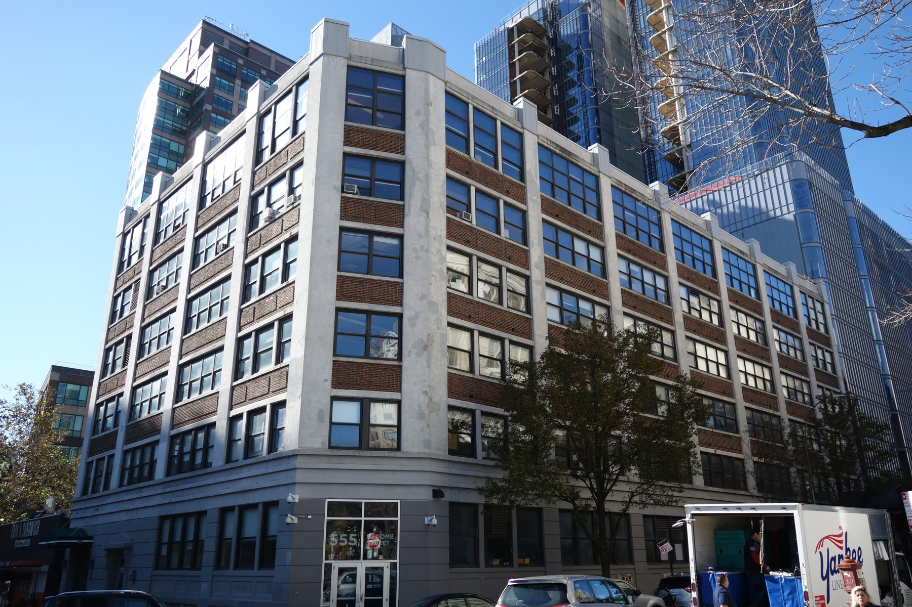
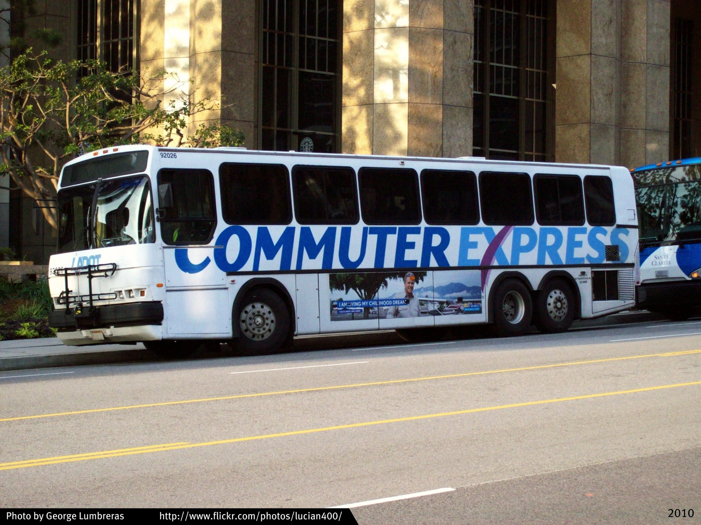

PHOTO: Ludovic Bertron from New York City, Usa / Wikimedia Commons · 写真 2枚
米国 / 市民連合による交通計画への働きかけ・暫定閉鎖
ワシントン・スクエア公園の自動車交通排除
Jane Jacobsは地域運動への参加・組織づくりに関与。Ray Rubinow、Shirley Hayes、Edith Lyonsらの役割と区別する。
一つの争点でつながり、試して判断を変える。
仕組み・成果・限界を読む →URBAN THINKERS / FROM IDEAS TO PRACTICE
まちづくりの大家 9人 × 18の実践
2016年のタイムズスクエア。歩行者空間の日常利用を示す対象地写真で、公共生活調査の実施場面ではない。
掲載元 ↗ · CC BY-SA 4.0 ↗
2016-05-25 · 表示用に縮小しJPEG再圧縮。切り抜き・色変更なし。
 MELBOURNE
MELBOURNE2023年のデグレーブス・ストリート。Places for Peopleの対象となる中心市街地の後年の利用風景で、調査時点の記録ではない。
掲載元 ↗ · CC BY 4.0 ↗
2023-02-20 · 表示用に縮小しJPEG再圧縮。切り抜き・色変更なし。
9人の思想と、18の実践。
まちをどう捉え、誰と何を変え、どこまで確かめたのか。
本人の仕事を、4つの切り口と8工程につないで読みます。
2026年10月6日確認。思想の要約はMDLの編集です。件数は記事・調査単位で、独立した事業数ではありません。研究や提言を施設運営の実績とは扱いません。本人の原文、自治体の報告、書誌・紹介を区別しています。
01 / JANE JACOBS
まちは、日常の営みから読む。
人が歩き、商い、住み、出会う。細かな活動のつながりから、都市の生命力を捉える。
PHOTO: Ludovic Bertron from New York City, Usa / Wikimedia Commons · 写真 2枚
米国 / 市民連合による交通計画への働きかけ・暫定閉鎖
Jane Jacobsは地域運動への参加・組織づくりに関与。Ray Rubinow、Shirley Hayes、Edith Lyonsらの役割と区別する。
一つの争点でつながり、試して判断を変える。
仕組み・成果・限界を読む →
PHOTO: Tdorante10 / Wikimedia Commons · 写真 2枚
米国 / 市民運動と高速道路計画の再検討
Jane Jacobsは住民側の活動家・組織者として関与。道路設計者や行政の最終決定者ではない。
道路の効率と、失われる暮らしを同じ判断へ。
仕組み・成果・限界を読む →リンク先の公開範囲を表示しています。書籍紹介や要旨は、原著全文ではありません。
02 / JAN GEHL
人が、立ち止まりたくなるまち。
歩く、座る、見る、話す。人間の身体と日常の活動を起点に、公共空間を考える。
PHOTO: Peter K Burian / Wikimedia Commons · 写真 1枚
米国 / 公共空間・公共生活の調査と政策助言
Jan Gehl・Gehl Architectsは公共空間分析・戦略に関与。NYC DOTがその分析を新政策・事業へ直接用いたと公式に説明。Midtown実証の実施・評価や全広場の設計を本人の担当としない。
人の活動の観察を、市の街路政策へ渡す。
仕組み・成果・限界を読む →PHOTO: -wuppertaler / Wikimedia Commons · 写真 2枚
オーストラリア / 公共空間・公共生活の縦断調査と計画提言
Jan Gehlは市との公共生活調査・提言・2004年再調査に関与。2015年版すべての著者、全整備の設計者という意味ではない。
人の数を測り、測り方そのものも見直す。
仕組み・成果・限界を読む →リンク先の公開範囲を表示しています。書籍紹介や要旨は、原著全文ではありません。
03 / KEVIN LYNCH
まちの姿は、人の頭の中にある。
住民や来訪者がどう道を覚え、場所を見分けるか。都市を、使う人の知覚から読み解く。

PHOTO: Luciof / Wikimedia Commons · 写真 2枚
米国 / 住民の都市イメージと現地観察を比べる研究
Kevin LynchはGyörgy Kepesと共同で都市形態の知覚を研究。住民調査と現地観察を用い、都市イメージの方法を整理した。
設計図と、使う人の頭の中の地図を照らす。
仕組み・成果・限界を読む →
PHOTO: NASA / Wikimedia Commons · 写真 2枚
米国／メキシコ / 越境地域の環境・成長・交通に関する調査報告と提言
Kevin LynchはDonald Appleyardとの共同地域調査・計画提言の著者。交通・環境事業を一括実施した運営者ではない。
行政境界を越え、成長と自然を一緒に考える。
仕組み・成果・限界を読む →リンク先の公開範囲を表示しています。書籍紹介や要旨は、原著全文ではありません。
04 / CHRISTOPHER ALEXANDER
良い場所の知恵を、みんなの言葉に。
繰り返し現れる空間の問題と解き方を共有し、利用者も参加しながら、場所を少しずつ育てる。

PHOTO: 東野高等学校事務室 / Wikimedia Commons · 写真 2枚
日本 / 利用者参加による学校キャンパスの設計・建設
Christopher AlexanderはChief Architect。Hans-Joachim NeisらCES共同チームと学校利用者が関与し、施工はFujita Corporation。
利用者の言葉を、現地で確かめる空間へ。
仕組み・成果・限界を読む →
PHOTO: User:Akendall / Wikimedia Commons · 写真 2枚
米国 / 参加型キャンパス計画の方法と継続的な制度運用
Christopher AlexanderはMurray Silverstein、Shlomo Angel、Sara Ishikawa、Denny Abramsとの共著・方法構築に関与。現行計画を単独で運営する人物ではない。
完成図を固定せず、判断の方法を続ける。
仕組み・成果・限界を読む →リンク先の公開範囲を表示しています。書籍紹介や要旨は、原著全文ではありません。
05 / ROBERT CERVERO
駅があるだけでは、まちは変わらない。
土地利用と交通を一緒に考え、速く遠くへ移動することから、生活の機会に届くことへ評価を移す。

PHOTO: Pi.1415926535 / Wikimedia Commons · 写真 1枚
米国 / 鉄道沿線の研究評価
Robert CerveroはJohn Landisと研究を主導。BARTの建設・運営や沿線施設の設計を担った事例ではない。
駅の存在と、開発が起きる条件を分けて調べる。
仕組み・成果・限界を読む →
PHOTO: Ser Amantio di Nicolao / Wikimedia Commons · 写真 1枚
米国 / 複数住宅の研究評価
Robert CerveroはG. B. Arringtonとの共著研究者。対象住宅の開発者・設計者としての関与を示す事例ではない。
標準の交通予測を、駅近くの住宅の実測で問い直す。
仕組み・成果・限界を読む →リンク先の公開範囲を表示しています。書籍紹介や要旨は、原著全文ではありません。
06 / CARLOS MORENO
遠くへ速く、から、近くで豊かに。
日々の暮らしに必要な機能へ、徒歩や自転車で無理なくアクセスできる近接性を考える。

PHOTO: Chabe01 / Wikimedia Commons · 写真 1枚
フランス / 既存公共施設の時間帯別開放
Carlos Morenoは15分都市の提唱者で、大学公式プロフィールが市長のSmart City特使としての役割を記載。本事例との関係は政策枠組みへの関与であり、個別施設開放の設計・実施責任は未確認。
生活機能を近づけ、既存施設を時間で使い分ける。
仕組み・成果・限界を読む →
PHOTO: JackyM59 / Wikimedia Commons · 写真 1枚
フランス / 広域地域計画の共同策定
Carlos Moreno本人とETI研究者が、自治体の選出議員・実務チームと約1年間共同検討。地域計画p.15に関係が記載される。個々の建物・道路の設計実績ではない。
15分という数値を移す前に、生活圏の構造に合わせる。
仕組み・成果・限界を読む →リンク先の公開範囲を表示しています。書籍紹介や要旨は、原著全文ではありません。
07 / SUSAN SHAHEEN
シェアで、何が本当に変わったか。
登録者や車両が増えた先で、車依存と移動の不平等が減ったかを、利用者の行動から確かめる。

PHOTO: GoToVan / Wikimedia Commons · 写真 1枚
米国・カナダ / カーシェアの複数都市研究評価
Susan ShaheenはElliot Martinとの共同評価研究者。car2goの経営・運行・自治体許認可を担った事例ではない。
共有車の台数ではなく、所有と移動の変化を調べる。
仕組み・成果・限界を読む →
PHOTO: Don DeBold / Wikimedia Commons · 写真 2枚
米国 / 駅接続サービスの実証と研究評価
Susan Shaheenは最終報告の筆頭著者・共同評価研究者。研究者個人を商業運営の単独責任者としない。
鉄道の前後を補う実証と、続けられる事業を分けて評価する。
仕組み・成果・限界を読む →リンク先の公開範囲を表示しています。書籍紹介や要旨は、原著全文ではありません。
08 / PERAPHAN JITTRAPIROM
未来が変わる前提で、交通をつくる。
住民・事業者・自治体が何を成功とするかを共有し、不確実な将来に応じて変えられる移動政策を考える。

PHOTO: Takeaway / Wikimedia Commons · 写真 1枚
タイ / 市民ボランティアの現地実験
Peraphan Jittrapiromは本人ポートフォリオでliving lab活動を組織したと記載。市の交通行政全体や恒久道路整備の責任者とは区別する。
歩く・こぐ・直すという具体的な活動から交通を試す。
仕組み・成果・限界を読む →
PHOTO: KatVanHuis / Wikimedia Commons · 写真 1枚
オランダ / 参加型交通計画の方法研究
2023年原著のContributionsはJittrapiromが研究・方法の構想、プロジェクト管理、執筆主導を担当したと明記。On the Move全体の所有者や市の計画決定者とはしない。
望ましい未来と、前提が変わったときの対応を一緒に考える。
仕組み・成果・限界を読む →リンク先の公開範囲を表示しています。書籍紹介や要旨は、原著全文ではありません。
09 / DONALD SHOUP
駐車の価格が、まちの使われ方を変える。
無料に見える駐車にも、土地・費用・渋滞の負担がある。料金と還元先から、空間の配分を問い直す。

PHOTO: Tony Webster / Wikimedia Commons · 写真 1枚
米国 / 駐車管理の政策実証・評価
Donald Shoupの研究をSFMTAが思想的基盤として明記。ShoupはPierceとの料金・占有率評価の共著者。実施責任者、単独設計者、正式な助言契約者だったとは確認していない。
空きと探索時間を測り、料金・情報・支払いを組み合わせる。
仕組み・成果・限界を読む →
PHOTO: George Lumbreras（Flickr: George） / Wikimedia Commons · 写真 1枚
米国 / 雇用主の通勤補助制度の研究評価
Donald Shoupによる制度導入後の研究評価。実施者は各雇用主で、研究者が全8事業所の通勤制度を直接運営した事例ではない。
駐車する人だけに届く補助を、通勤の選択肢として捉え直す。
仕組み・成果・限界を読む →リンク先の公開範囲を表示しています。書籍紹介や要旨は、原著全文ではありません。